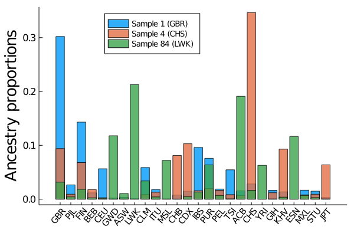
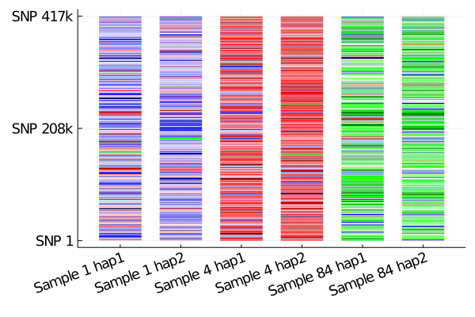

Estimating ancestry
If samples in the reference haplotype panel are labeled with a population origin, MendelImpute can also be used for:
- Estimate admixed proportions
- Chromosome painting
We use the 1000 genomes chromosome 22 as illustration. Example code to generate plots are presented.
# first load all necessary packages
using MendelImpute
using VCFTools
using GeneticVariation
using Random
using DataFrames
using Plots
using JLSO┌ Info: Precompiling MendelImpute [e47305d1-6a61-5370-bc5d-77554d143183]
└ @ Base loading.jl:1278Data preparation
Step 0. Filter chromosome data
The original chromosome data are filtered into target and reference panels. Follow detailed example in Phasing and Imputation to obtain the same data.
Step 1. Get population data
Download population code for each 1000 genomes sample via the command below (note wget will probably not work on non-Mac OS). Different population code is explained here.
# run this code in terminal
# wget -r -l3 -N --no-parent ftp://ftp.1000genomes.ebi.ac.uk/vol1/ftp/data_collections/1000_genomes_project/data/For easier processing, copy the country of origin data into a folder called data. It should look contain these subfolders (where each population code contains the sample IDs that belong to the population):
;ls dataACB
ASW
BEB
CDX
CEU
CHB
CHS
CLM
ESN
FIN
GBR
GIH
GWD
IBS
ITU
JPT
KHV
LWK
MSL
MXL
PEL
PJL
PUR
STU
TSI
YRIStep 2. Process each sample's population origin
The goal here is to create a Dict{key, value} where each key is a sample ID and the value is the population code. This will be used for both the paint and composition function.
Here the population origin for different samples are encoded in weird subfolder directory way. We process them into the desired dictionary structure.
df = DataFrame(sample = String[], population = String[])
refID_to_population = Dict{String, String}()
for population in readdir("data/")
population == ".DS_Store" && continue # skip auxiliary files
for sample in readdir("data/" * population)
sample == ".DS_Store" && continue # skip auxiliary files
push!(df, (sample, population))
refID_to_population[sample] = population
end
end
refID_to_populationDict{String,String} with 2709 entries:
"HG01791" => "GBR"
"HG02736" => "PJL"
"HG00182" => "FIN"
"HG03914" => "BEB"
"HG00149" => "GBR"
"NA12156" => "CEU"
"HG02642" => "GWD"
"HG02851" => "GWD"
"NA19835" => "ASW"
"NA19019" => "LWK"
"HG01131" => "CLM"
"HG03725" => "ITU"
"HG03578" => "MSL"
"NA18550" => "CHB"
"HG02401" => "CDX"
"HG01350" => "CLM"
"HG03973" => "ITU"
"NA07000" => "CEU"
"HG01709" => "IBS"
"HG01395" => "PUR"
"HG02388" => "CDX"
"HG01980" => "PEL"
"HG01979" => "PEL"
"HG01122" => "CLM"
"HG03869" => "ITU"
⋮ => ⋮Step 3. Compute phase information using MendelImpute
This is equivalent to running a typical imputation. Please ensure that:
- The output file name ends with
.jlso(save output to ultra-compressed format) impute = true(so the output contains the entire chromosome)
Note data used here is prepared in Detailed Example.
# compute each person's phase information
tgtfile = "target.chr22.typedOnly.masked.vcf.gz"
reffile = "ref.chr22.maxd1000.excludeTarget.jlso"
outfile = "mendel.imputed.jlso"
@time ph = phase(tgtfile, reffile, outfile);Number of threads = 1
Importing reference haplotype data...
[32mComputing optimal haplotypes...100%|████████████████████| Time: 0:00:22[39m
Total windows = 1634, averaging ~ 508 unique haplotypes per window.
Timings:
Data import = 13.1989 seconds
import target data = 3.39344 seconds
import compressed haplotypes = 9.80547 seconds
Computing haplotype pair = 22.7262 seconds
BLAS3 mul! to get M and N = 0.990657 seconds per thread
haplopair search = 17.9241 seconds per thread
initializing missing = 0.0950638 seconds per thread
allocating and viewing = 0.262792 seconds per thread
index conversion = 0.0134224 seconds per thread
Phasing by win-win intersection = 4.74799 seconds
Window-by-window intersection = 0.490777 seconds per thread
Breakpoint search = 3.28471 seconds per thread
Recording result = 0.00808895 seconds per thread
Imputation = 3.06857 seconds
Imputing missing = 0.0608952 seconds
Writing to file = 3.00767 seconds
Total time = 43.917 seconds
51.409108 seconds (99.91 M allocations: 5.675 GiB, 4.56% gc time)Estimate admixture proportions
The composition will compute a list of percentages where composition[i] equals the sample's ancestry (in %) from populations[i]. Thus we simply have to plot the result. This illustration depends on data preparation above.
Step 1: import necessary data
# First import compressed reference panel
reffile = "ref.chr22.maxd1000.excludeTarget.jlso"
compressed_Hunique = JLSO.load(reffile)[:compressed_Hunique]
panelID = compressed_Hunique.sampleID
# also need target sample's ancestry
tgtfile = "target.chr22.typedOnly.masked.vcf.gz"
reader = VCF.Reader(openvcf(tgtfile, "r"))
tgtID = VCF.header(reader).sampleID
sample_population = [refID_to_population[id] for id in tgtID];# here is our sample population (sample 1 is GBR, 4 is CHS, 84 is LWK...etc)
sample_population100-element Array{String,1}:
"GBR"
"FIN"
"CHS"
"CHS"
"CDX"
"CDX"
"PUR"
"PUR"
"PUR"
"PUR"
"GBR"
"CLM"
"IBS"
⋮
"MXL"
"ASW"
"ASW"
"TSI"
"TSI"
"TSI"
"TSI"
"TSI"
"TSI"
"TSI"
"GIH"
"GIH"Step 2: call composition function
The composition will compute a list of percentages where composition[i] equals the sample's ancestry (in %) from populations[i]. We are finally using the imputation result stored in ph.
populations = MendelImpute.unique_populations(refID_to_population)
@time sample1_comp = composition(ph[1], panelID, refID_to_population) # origin GBR
@time sample4_comp = composition(ph[4], panelID, refID_to_population) # origin CHS
@time sample84_comp = composition(ph[84], panelID, refID_to_population) # origin LWK 0.003916 seconds (28 allocations: 2.719 KiB)
0.000336 seconds (8 allocations: 1.250 KiB)
0.000370 seconds (8 allocations: 1.250 KiB)
26-element Array{Float64,1}:
0.03159153536944775
0.004281873442329377
0.0183269450383178
0.0025138200248509064
0.0014987155576730166
0.11780598576459632
0.0104802353893189
0.21297801484829695
0.0338623527918964
0.004151394212468068
0.07204967308369105
0.0002681408026507634
0.004550014244980141
0.013386690160908423
0.06359485840010917
0.006903428611102466
0.0006188785489751994
0.1910251836884204
0.01634940661876842
0.06281796830671477
0.0004357288043074905
0.003690527207912069
0.11661611095283356
0.006875896296544575
0.0028884989142691606
0.0004381229186168723We computed the population percentages for sample 1, 4, and 84 with respect to the 26 reference populations. Note the first run is slower because Julia has to compile the code.
Step 3: Plot the percentages
Here sample1_comp[i] equals the sample's estimated ancestry (in %) from populations[i]. Thus we simply have to create a bar plot for each:
barplot = bar(sample1_comp, xticks=(1:1:26, populations), xrotation=50, grid=false,
ylabel = "Ancestry proportions", label="Sample 1 (GBR)", alpha=0.8, legend=:top,
xtickfont=font(10), ytickfont=font(11), legendfont=font(9), yguidefontsize=18)
bar!(barplot, sample4_comp, label="Sample 4 (CHS)", alpha=0.8)
bar!(barplot, sample84_comp, label="Sample 84 (LWK)", alpha=0.8)
Chromosome painting
The main function is the paint function. For an imputed sample, it will convert each haplotype segment into a percentage indicating the segment's length in the chromosome. Then the list can be used for easy plotting.
Note: this illustration depends on data preparation above.
Step 1: Choose your colors
In this example, colors are arranged such that:
- Blue ≈ European/American
- Red ≈ Asian
- Green ≈ African
Of course, Julia lets you plot your favoriate colors. We pick our colors here: https://mdigi.tools/color-shades/#008000.
# generated here: https://mdigi.tools/color-shades/#008000
# Blue ≈ European/American, Red ≈ Asian, Green ≈ Africa
goodcolors = [colorant"#c8c8ff", colorant"#ffeaea", colorant"#ffbfbf", colorant"#a4a4ff",
colorant"#8080ff", colorant"#e3ffe3", colorant"#aaffaa", colorant"#71ff71",
colorant"#5b5bff", colorant"#ff9595", colorant"#39ff39", colorant"#ff6a6a",
colorant"#ff4040", colorant"#3737ff", colorant"#1212ff", colorant"#0000c8",
colorant"#0000a4", colorant"#00ff00", colorant"#ff1515", colorant"#00c600",
colorant"#ea0000", colorant"#bf0000", colorant"#008e00", colorant"#00005b",
colorant"#950000", colorant"#6a0000"]
Step 2: Run paint funcion
This function convert the imputed haplotype segments into a list of percentages (one list for each strand). This is simply a post-processing routine so that data can be used for easy plotting later.
populations = unique_populations(refID_to_population)
@time sample1_s1_comp, sample1_s2_comp = paint(ph[1], panelID, refID_to_population)
@time sample4_s1_comp, sample4_s2_comp = paint(ph[4], panelID, refID_to_population)
@time sample84_s1_comp, sample84_s2_comp = paint(ph[84], panelID, refID_to_population); 0.000260 seconds (12 allocations: 19.125 KiB)
0.000234 seconds (12 allocations: 20.375 KiB)
0.000252 seconds (12 allocations: 22.875 KiB)Step 3: Generate plots for painted chromosomes
We found the StatsPlots.jl package to be more useful for this purpose, although the code below still did the plotting in a very roundabout way.
# assign a color to each haplotype segment
sample1_s1_colors = [goodcolors[findfirst(x -> x == pop, populations)] for pop in sample1_s1_comp[2]]
sample1_s1_colors = reshape(sample1_s1_colors, 1, length(sample1_s1_colors))
sample1_s2_colors = [goodcolors[findfirst(x -> x == pop, populations)] for pop in sample1_s2_comp[2]]
sample1_s2_colors = reshape(sample1_s2_colors, 1, length(sample1_s2_colors))
sample4_s1_colors = [goodcolors[findfirst(x -> x == pop, populations)] for pop in sample4_s1_comp[2]]
sample4_s1_colors = reshape(sample4_s1_colors, 1, length(sample4_s1_colors))
sample4_s2_colors = [goodcolors[findfirst(x -> x == pop, populations)] for pop in sample4_s2_comp[2]]
sample4_s2_colors = reshape(sample4_s2_colors, 1, length(sample4_s2_colors))
sample84_s1_colors = [goodcolors[findfirst(x -> x == pop, populations)] for pop in sample84_s1_comp[2]]
sample84_s1_colors = reshape(sample84_s1_colors, 1, length(sample84_s1_colors))
sample84_s2_colors = [goodcolors[findfirst(x -> x == pop, populations)] for pop in sample84_s2_comp[2]]
sample84_s2_colors = reshape(sample84_s2_colors, 1, length(sample84_s2_colors));using StatsPlots, FixedPointNumbers
# some tedious and roundabout routine for making a bad groupedplot
sample1_s1l = length(sample1_s1_comp[1])
sample1_s2l = length(sample1_s2_comp[1])
sample4_s1l = length(sample4_s1_comp[1])
sample4_s2l = length(sample4_s2_comp[1])
sample84_s1l = length(sample84_s1_comp[1])
sample84_s2l = length(sample84_s2_comp[1])
maxlen = max(sample1_s1l, sample1_s2l, sample4_s1l, sample4_s2l, sample84_s1l, sample84_s2l)
mydata = zeros(6, maxlen)
copyto!(@view(mydata[1, 1:sample1_s1l]), sample1_s1_comp[1])
copyto!(@view(mydata[2, 1:sample1_s2l]), sample1_s2_comp[1])
copyto!(@view(mydata[3, 1:sample4_s1l]), sample4_s1_comp[1])
copyto!(@view(mydata[4, 1:sample4_s2l]), sample4_s2_comp[1])
copyto!(@view(mydata[5, 1:sample84_s1l]), sample84_s1_comp[1])
copyto!(@view(mydata[6, 1:sample84_s2l]), sample84_s2_comp[1])
mycolors = Matrix{RGB{Normed{UInt8,8}}}(undef, 6, maxlen)
copyto!(@view(mycolors[1, 1:sample1_s1l]), sample1_s1_colors)
copyto!(@view(mycolors[2, 1:sample1_s2l]), sample1_s2_colors)
copyto!(@view(mycolors[3, 1:sample4_s1l]), sample4_s1_colors)
copyto!(@view(mycolors[4, 1:sample4_s2l]), sample4_s2_colors)
copyto!(@view(mycolors[5, 1:sample84_s1l]), sample84_s1_colors)
copyto!(@view(mycolors[6, 1:sample84_s2l]), sample84_s2_colors)
# axis labels
xnames = ["Sample 1 hap1", "Sample 1 hap2", "Sample 4 hap1", "Sample 4 hap2", "Sample 84 hap1", "Sample 84 hap2"]
ynames = ["SNP 1", "SNP 208k", "SNP 417k"]
# final plot
chrom_plt = groupedbar(mydata, bar_position = :stack, bar_width=0.7, label=:none,
lw = 0, color=mycolors, xticks=(1:1:6, xnames), yticks=(0:0.5:1, ynames),
ytickfont=font(12), xtickfont=font(12), xrotation=20)
For more details, please refer to our paper, or file an issue on GitHub.